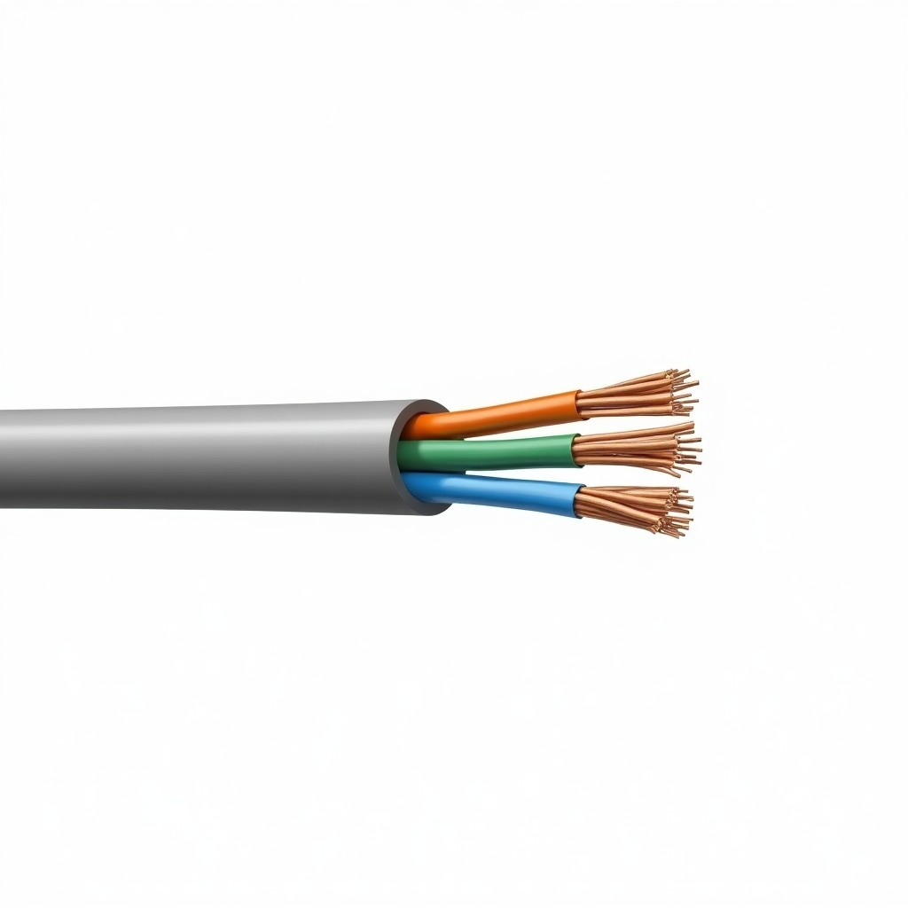
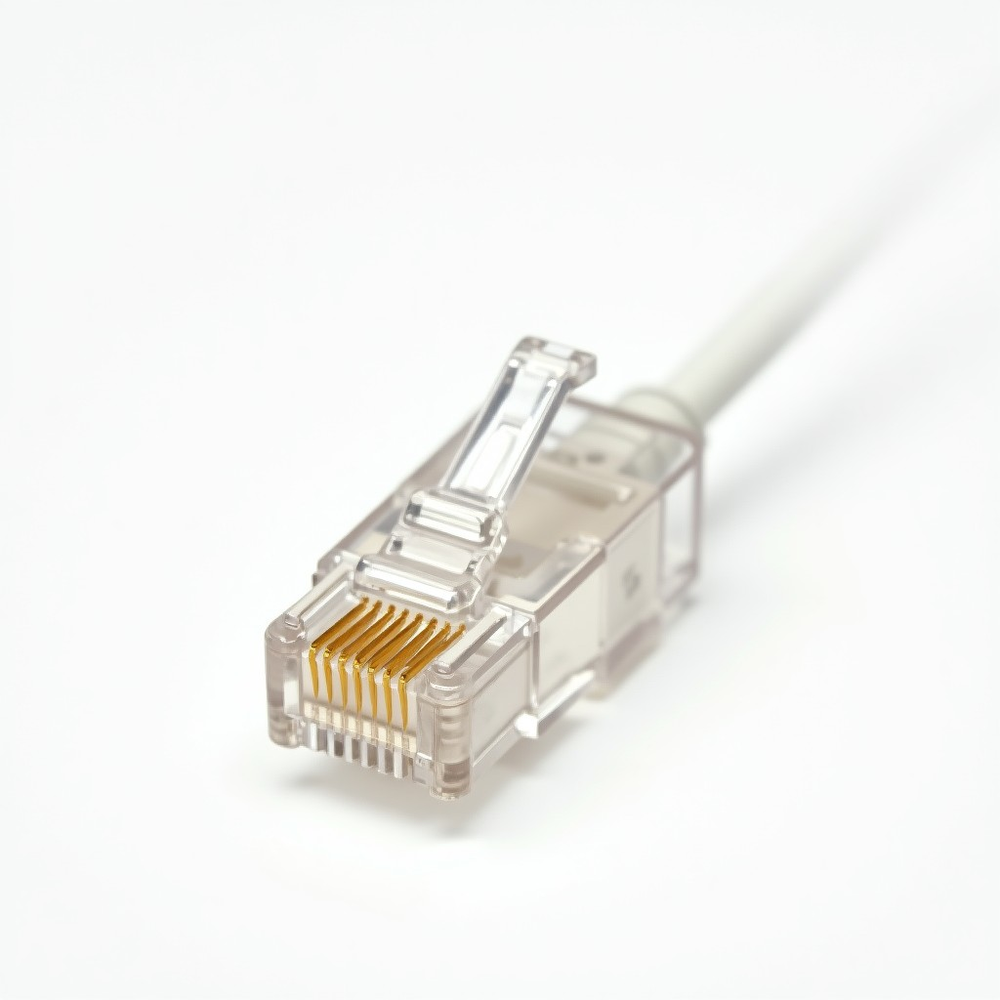
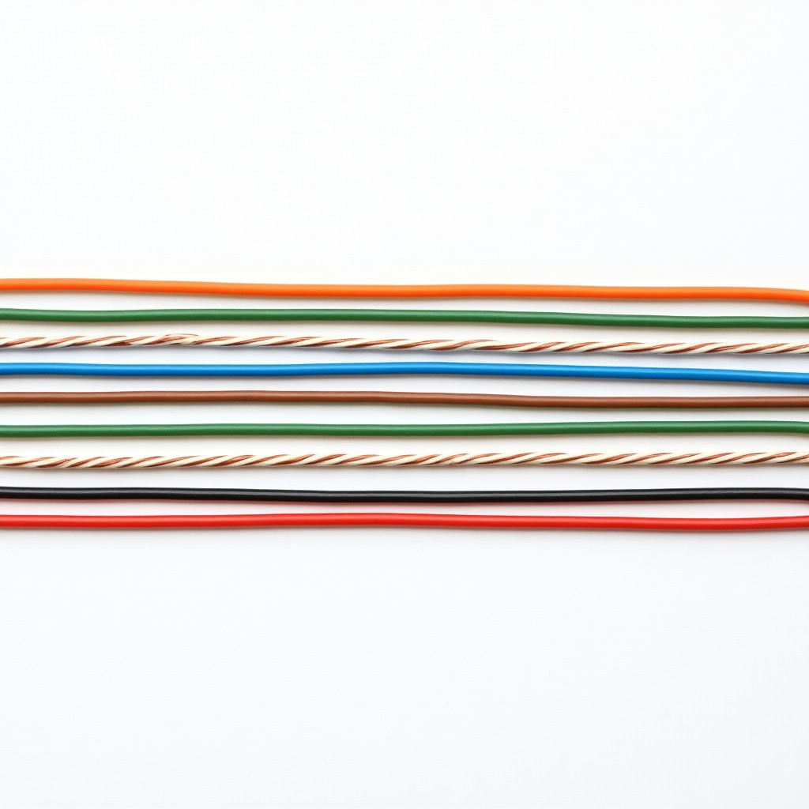
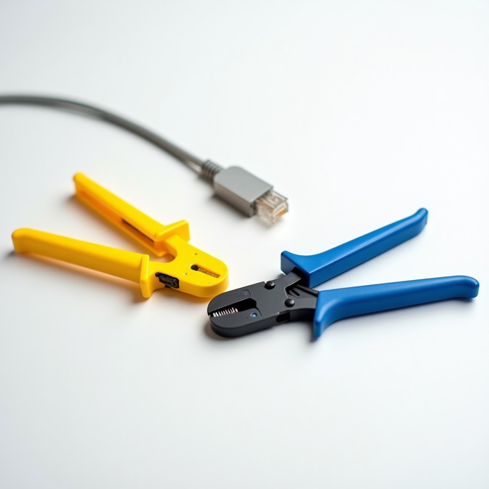
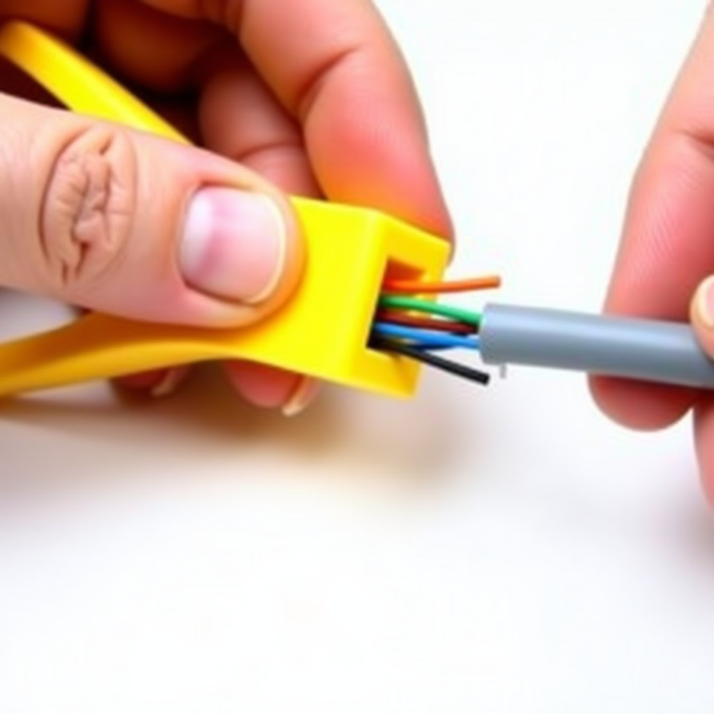
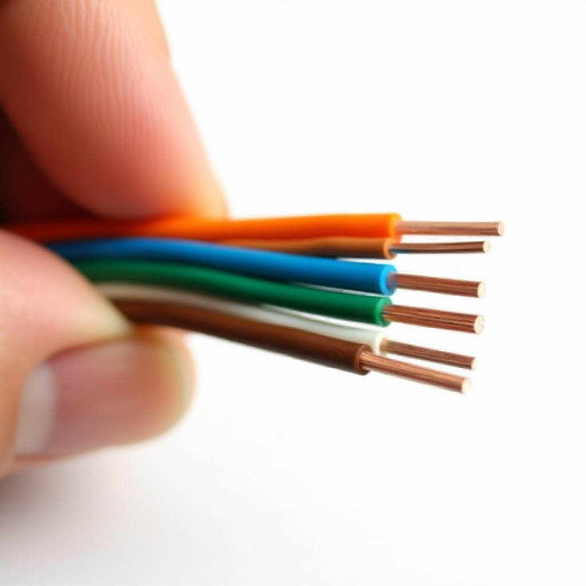
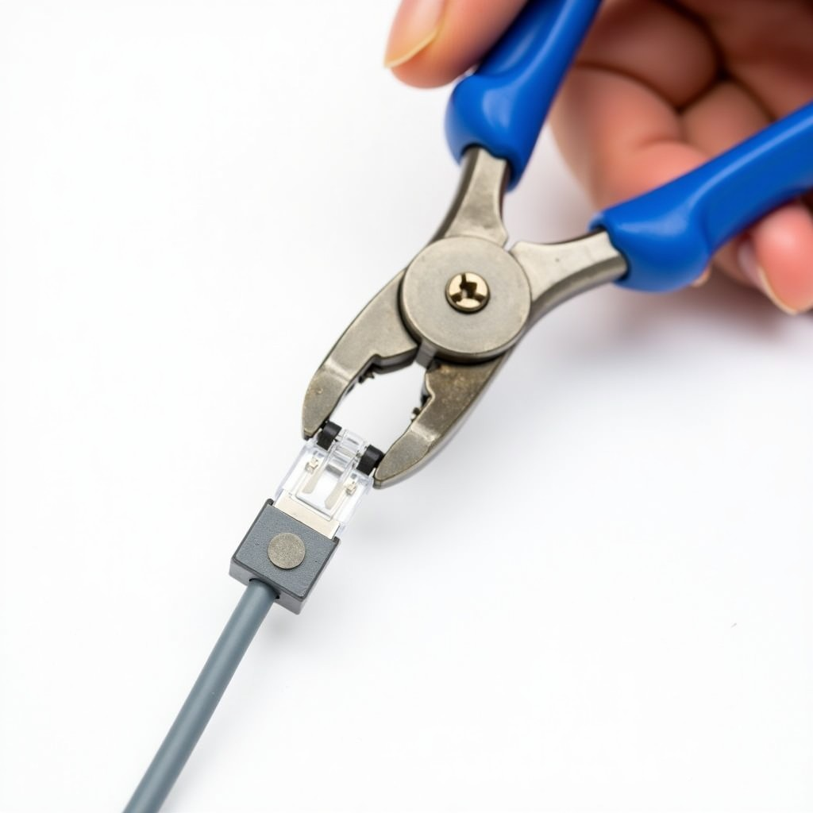
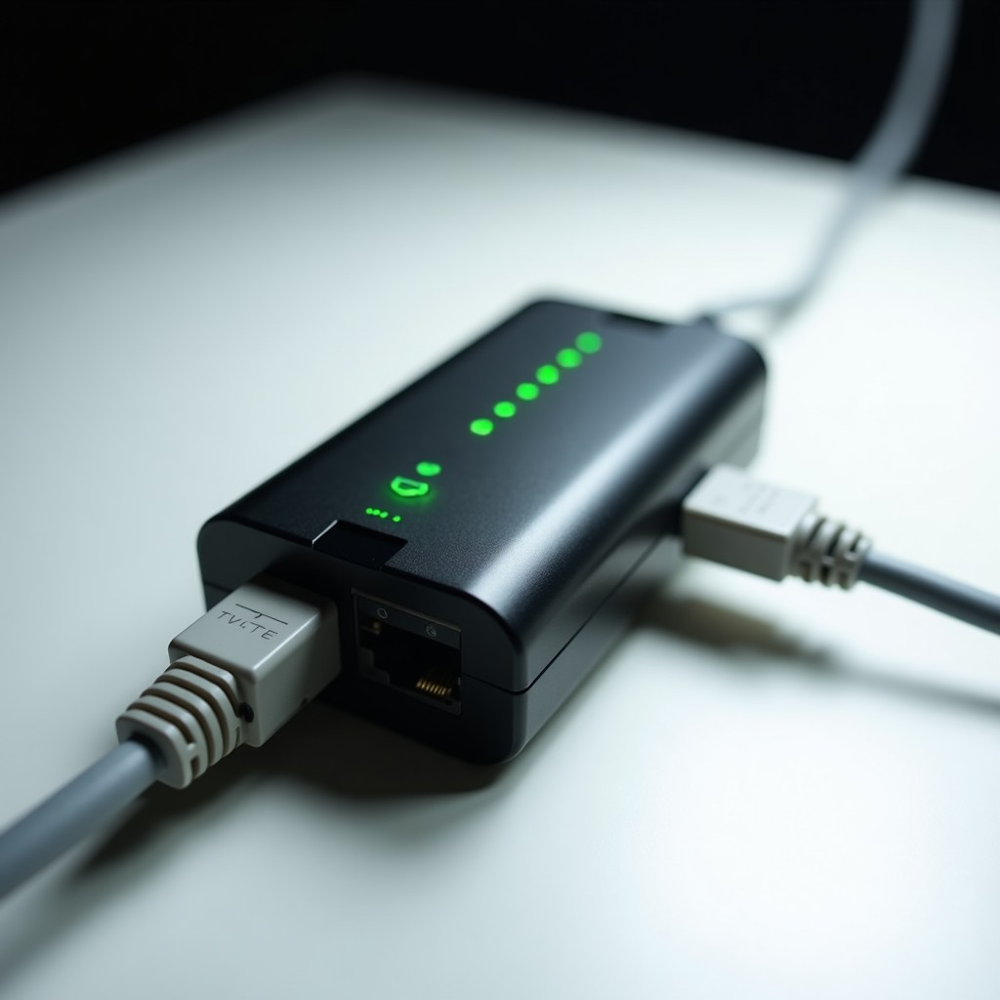

Objetivos del taller
- Entender qué es el cableado estructurado y por qué es importante
- Conocer el cable UTP (par trenzado sin apantallar) y sus categorías
- Identificar el conector RJ-45 y sus pines
- Diferenciar los estándares T568A y T568B
- Usar las herramientas: stripper, crimpadora, conectores
- Cortar, ordenar y crimpear un cable UTP de 1 metro con 2 conectores RJ-45
- Verificar que el cable funcione con un tester
Cableado estructurado
Es el sistema organizado de cables y conectores que permite la comunicación de datos, voz y video en una red. En lugar de cablear "como sea", existen estándares que definen cómo se hacen los cables para que siempre funcionen correctamente. Todo lo que ves en una oficina: los cables que salen de las paredes, los puertos de red, las salas de servidores… todo sigue estos estándares.
Cable UTP (Par Trenzado Sin Apantallar)
El cable más común en redes locales. Tiene 4 pares de hilos (8 hilos en total), cada par trenzado entre sí para reducir interferencias. Los pares tienen colores específicos:

Copia en tu cuaderno: Categorías del cable UTP
// Categorías del cable UTP (las más comunes) Cat 5e — Hasta 1 Gbps / 100 MHz → El más común en oficinas y casas → Cable que usaremos hoy Cat 6 — Hasta 10 Gbps / 250 MHz → Mejor rendimiento, más caro → Trenzado más apretado Cat 6a — Hasta 10 Gbps / 500 MHz → Para centros de datos → Mayor distancia (100m) // Longitud máxima de un cable: 100 metros
Conector RJ-45
El conector rectangular de 8 pines que se inserta en los puertos de red. Tiene un contacto metálico en cada pin que toca el hilo del cable cuando se crimpea. Los pines se numeran del 1 al 8 (mirando el conector con el contacto hacia arriba y la pestaña hacia abajo).
Conector RJ-45 mirando los contactos (pestaña abajo)

¿Cuál uso?
Existen dos estándares para ordenar los 8 hilos dentro del conector. El más usado en Colombia y el mundo es T568B. Para este taller usaremos T568B en ambos extremos del cable (esto se llama "cable directo" o "straight-through").
| Pin | T568A | T568B (el que usamos) |
|---|---|---|
| 1 | Verde-Blanco | Naranja-Blanco |
| 2 | Verde | Naranja |
| 3 | Naranja-Blanco | Verde-Blanco |
| 4 | Azul | Azul |
| 5 | Azul-Blanco | Azul-Blanco |
| 6 | Naranja | Verde |
| 7 | Marrón-Blanco | Marrón-Blanco |
| 8 | Marrón | Marrón |
Cable directo: ambos extremos T568B → conecta PC con router/switch.
Cable cruzado: un extremo T568A y el otro T568B → conecta PC con PC (ya casi no se usa).
Diagrama visual: T568B (el que aprenderemos)
Así se ven los 8 hilos ordenados de izquierda a derecha dentro del conector:

Copia el diagrama en tu cuaderno (dibuja los colores)
// T568B - Orden de izquierda a derecha (mirando contactos) Pin 1: Naranja-Blanco (naranja claro, blanco con raya naranja) Pin 2: Naranja (naranja sólido) Pin 3: Verde-Blanco (verde claro, blanco con raya verde) Pin 4: Azul (azul sólido) Pin 5: Azul-Blanco (azul claro, blanco con raya azul) Pin 6: Verde (verde sólido) Pin 7: Marrón-Blanco (marrón claro, blanco con raya marrón) Pin 8: Marrón (marrón sólido) // Dibuja cada color con su respectivo crayón/lápiz
Cable UTP Cat 5e
1 metro por estudiante. Cable de 4 pares trenzados.
Conectores RJ-45
2 por estudiante (uno por cada extremo del cable).
Pelador (Stripper)
Para quitar la cubierta externa del cable sin dañar los hilos.
Crimadora
Herramienta que inserta y fija el conector al cable.
Tester de cables
Verifica que cada hilo esté conectado correctamente.
Cortador / Tijeras
Para cortar el cable y alinear los hilos.
Nuestras herramientas en el taller

Instrucciones paso a paso
Sigue estos pasos para cablear cada extremo del cable. Primero haces un lado, luego el otro. ¡Manos a la obra!
Paso 1: Corta y pela el cable (copia en cuaderno)
// PASO 1: Cortar y pelar 1. Corta el cable UTP a 1 metro de largo 2. Usa el pelador (stripper) para quitar la cubierta externa por 2.5 cm en un extremo 3. CUIDADO: no cortes los hilos internos, solo la cubierta plástica de afuera 4. Verás 8 hilos de colores trenzados
Ahora en la práctica
Toma el pelador, coloca el cable dentro, gira una vuelta suave y tira de la cubierta. Si ves los 8 hilos intactos, ¡lo hiciste bien!

Paso 2: Destrenza y ordena los hilos (copia en cuaderno)
// PASO 2: Destrenzar y ordenar (T568B) 1. Separa los 4 pares de hilos 2. Destrenza CADA par (el naranja, el verde, el azul, el marrón) 3. Alisa los 8 hilos con los dedos 4. Ordénalos de izquierda a derecha así: 1. Naranja-Blanco 2. Naranja 3. Verde-Blanco 4. Azul 5. Azul-Blanco 6. Verde 7. Marrón-Blanco 8. Marrón 5. ¡VERIFICA dos veces antes de cortar!
Ahora en la práctica
Es el paso más importante. Tómate tu tiempo. Los hilos deben quedar paralelos, sin cruzarse, en el orden exacto. Pídele a tu compañero que verifique.

Paso 3: Corta recto e Inserta (copia en cuaderno)
// PASO 3: Cortar recto y Insertar en el conector 1. Con los hilos ordenados, corta recto con la tijera/cortador. Deben quedar expuestos 1.5 cm 2. Sostén el conector RJ-45 con la pestaña hacia abajo y los contactos hacia arriba 3. Inserta los hilos suavemente hasta que lleguen al fondo del conector 4. VERIFICA: los colores deben estar en orden y los hilos deben tocar el fondo 5. La cubierta del cable debe entrar un poco dentro del conector (para que se sujet)
Ahora en la práctica
Mira el conector por transparencia: ¿ves los 8 colores en orden? ¿Llegan al fondo? Si no estás seguro, saca y vuelve a insertar. Es mejor hacerlo bien que rápido.
Paso 4: Crimpear (copia en cuaderno)
// PASO 4: Crimpear el conector 1. Inserta el conector (con el cable) en la ranura de la crimadora 2. Asegúrate de que esté bien posicionado 3. Presiona fuerte la crimadora UNA vez (la herramienta hace todo el trabajo) 4. Saca el cable: el conector debe estar firmemente sujeto al cable 5. No se puede deshacer: una vez crimpeado, el conector queda fijo para siempre
Ahora en la práctica
Coloca el conector en la ranura correcta (la ranura para RJ-45, que es la más grande). Presiona con fuerza uniforme. Si suena un "click" o la herramienta llega al fondo, ¡listo!

Paso 5: Repite en el otro extremo (copia en cuaderno)
// PASO 5: El segundo conector 1. Toma el otro extremo del cable 2. Repite los pasos 1 a 4: - Pela 2.5 cm - Destrenza y ordena (T568B: misma secuencia) - Corta recto a 1.5 cm - Inserta en el conector - Crimpea 3. ¡Ambos extremos deben tener T568B!
Ahora en la práctica
Es el mismo procedimiento. Si ya te sientes cómodo con el primero, el segundo será más rápido. Recuerda: los dos extremos T568B para cable directo.
Paso 6: Verificar con el tester (copia en cuaderno)
// PASO 6: Probar el cable 1. Conecta un extremo al tester (parte A) 2. Conecta el otro extremo al tester (parte B) 3. Enciende el tester 4. Si todos los números del 1 al 8 parpadean en verde en ambos lados → ¡CABLE FUNCIONANDO! 5. Si algún número sale en rojo o no parpadea → hay un hilo mal conectado (hay que recortar y volver a crimpear)
Muéstraselo al profesor
Muestra el cable con sus dos conectores y el tester funcionando (todos los 8 verdes). Lleva tu cuaderno con los pasos copiados y el diagrama de colores dibujado.

¿Tu cable quedó bien? Verifica esto:
- El cable mide aproximadamente 1 metro
- Ambos extremos tienen un conector RJ-45 crimpeado
- Los hilos en cada conector están en orden T568B (1: Naranja-Blanco → 8: Marrón)
- La cubierta del cable entra un poco dentro del conector (sujeta)
- Los conectores están firmes (no se salen al tirar)
- El tester marca los 8 pines en verde en ambos extremos
- No hay cortos (hilos que se tocan entre sí)
Datos de la red
Velocidades comunes:
- • 100 Mbps (Fast Ethernet)
- • 1 Gbps (Gigabit Ethernet)
- • 10 Gbps (Cat 6a)
Distancia máxima:
- • Cable UTP: 100 metros
- • Por eso hay switches en las oficinas
- • Cada tramo máximo = 100m
¿Por qué funciona?
Los pares están trenzados para cancelar las interferencias electromagnéticas (EMI). Cada par tiene una vuelta de trenzado diferente para que no se interfieran entre sí. El trenzado es la clave: por eso no puedes simplemente pasar los hilos rectos — deben quedar lo más trenzados posible hasta llegar al conector.
Referencias: Cableado estructurado (Wikipedia) · RJ-45 (Wikipedia)
Entregable del taller
- Cable UTP de 1 metro con 2 conectores RJ-45 funcionando (tester verde en los 8 pines)
- Cuaderno con: diagrama de colores T568B dibujado, los 6 pasos copiados y los 4 pares de colores anotados
- Explicar al profesor qué es T568B y por qué los pares están trenzados
Reto extra (opcional)
Si te sobra tiempo, haz un segundo cable de otra longitud (50 cm o 2 metros) o intenta hacer un cable cruzado (un extremo T568A, el otro T568B).